Mémoire technique — Courants faibles base vie et chantier — KHAZNA ORY01

Mémoire technique
Courants faibles
base vie & chantier
Data center KHAZNA ORY01 — Fouju (77).
Réseaux, Wi-Fi, vidéoprotection, GTB et salles de visioconférence pendant 29 mois de chantier.
INTÉGRATEUR
CFA/VDI SÛRETÉ GTB RÉSEAUX CFO · CVC · SSI
Affaire
KHAZNA ORY01 — Base vie & chantier — Lot courants faibles
Client
EXYTE — entreprise générale
N° d'offre
[ DEV_PSB26xxxx ]
Site / adresse
RD 57 — 77390 Fouju
Lot / périmètre
VDI · Wi-Fi · IT · Vidéo · GTB · Audiovisuel
Responsable
Woody SEALE, Président
Sommaire
Ce que contient ce mémoire
Réponse de PROSYB pour le lot courants faibles des installations provisoires de base vie et de chantier du data center KHAZNA ORY01, établie sur le dossier de consultation (étude AVP FR02201, DPGF, synoptiques, CCTP vidéosurveillance), avec une place particulière pour l'exploitation et la maintenance.
1Synthèse de l'offrePérimètre · chiffres clés · engagements
2Compréhension du besoinLe projet · une base vie qui évolue en trois phases · enjeux
3Architecture des réseauxArchitecture logique · plan de VLAN · flux autorisés · sécurisation · typologie des équipements · évolution par phase
4VDI — câblage fibre et cuivreRépartiteurs · fibre OS2 · cuivre Cat. 6A · recette
5Wi-Fi et informatiqueBornes · paramétrage des équipements · postes de travail
6Audiovisuel et affichageSalles de visioconférence · afficheurs de chantier
7Vidéoprotection et détection intrusionCouverture · caméras · NVR Hikvision · logiciel iVMS-4200 · enregistrement · RGPD · conformité au CCTP
8GTB / GTEAutomates WAGO · comptage · alarmes techniques · supervision
9Organisation, études et phasageÉquipe · études d'exécution · planning · interfaces · sécurité
10Essais et réceptionRecettes par domaine · livrables · DOE
11Exploitation et maintenanceOrganisation sur 29 mois · préventif · correctif · délais · astreinte · évolutions de phase
12Hypothèses, interfaces et questionsLimites de prestation · points à confirmer avec EXYTE
13Pourquoi PROSYBNos engagements
L'essentiel
1Synthèse de l'offre
Pendant la construction du data center KHAZNA ORY01, les équipes d'EXYTE, des entreprises et des maîtres d'ouvrage vivront et travailleront dans une base vie qui grandit de 2 à 20 îlots, sur un chantier ouvert jour et nuit. PROSYB prend en charge l'ensemble des courants faibles de ces installations provisoires : du câble jusqu'au service rendu, de l'installation jusqu'au repli final, avec une maintenance assurée en continu pendant 29 mois.
480
prises RJ45 Cat. 6A dans les îlots, + 30 liaisons techniques
84
bornes Wi-Fi sur les trois phases
28
caméras Hikvision avec analyse intrusion
10
salles de visioconférence équipées
Le périmètre de notre offre
| Domaine | Contenu | DPGF |
|---|
| Études d'exécution CFA | Architecture IT et audiovisuel, synoptiques IT, sûreté et GTC, plans, fiches, PAQ | § 2 (EXE.CFA) |
| VDI et informatique | Répartiteurs principaux (Hubs 1, 2, 3) et secondaires, anneaux fibre OS2, liaisons cuivre Cat. 6A ; pose, raccordement et paramétrage des switchs (switchs informatiques fournis par EXYTE, switchs de vidéoprotection fournis par PROSYB), recettes | § 4 |
| Wi-Fi | 84 bornes : 4 en phase 2, 20 en phase 3, 60 en phase 4 | § 4 |
| Audiovisuel et affichage | 10 salles de réunion mobiles (écran iiyama 86" 4K sur chariot Chief, Logitech Rally Bar, 4 micros déportés), 6 afficheurs de chantier Samsung OHDX 55" 3 500 cd/m², diffusion centralisée Navori sur 16 écrans | § 4 |
| Vidéoprotection | 28 caméras sur mâts, réseau PoE, NVR, analyse intrusion et port des EPI | § 6 + CCTP lot 03 |
| GTB / GTE | 3 automates WAGO, comptage et alarmes des TGBT, poste de supervision, historisation et alertes | § 7 |
| Exploitation et maintenance CFA | Maintenance préventive et corrective, permanence, adaptations de phase, repli | § 8 (part CFA) |
Un réseau qui suit le chantierAnneaux fibre autocicatrisants, répartiteurs par zone : chaque phase s'ajoute sans couper la précédente.
Une sûreté conformeCouverture du périmètre, levée de doute vidéo, enregistrement maîtrisé, RGPD intégré dès l'étude.
Un service garantiMaintenance préventive, astreinte et stock de pièces sur site pendant toute la durée du chantier.
Le projet
2Compréhension du besoin
Le projet KHAZNA ORY01
KHAZNA Data Centers construit à Fouju (77) le data center ORY01 : 80 MW IT répartis en cinq PODs de 16 MW, sur une parcelle d'environ 5 hectares. EXYTE en assure la réalisation en entreprise générale. Les installations provisoires de chantier — énergie, base vie, sécurité, réseaux — font l'objet d'une étude AVP (référence FR02201) qui sert de base à cette consultation.
Une base vie qui évolue en trois phases
| Phase | Période (planning AVP) | Contenu courants faibles |
|---|
| Phase 2 2 mois | Prêt le 14/12/2026 | Cœur de réseau Hubs 1 et 2, 5 répartiteurs secondaires, boucle fibre, îlots 1 et 2 (24 prises, 4 bornes Wi-Fi, 3 salles visio), GTB |
| Phase 3 5 mois | Prêt le 02/02/2027 | Îlots 3 à 10 (96 prises, 20 bornes Wi-Fi, 7 salles visio), 2 répartiteurs annexes, 30 liaisons techniques, 6 afficheurs, vidéoprotection 28 caméras |
| Phase 4 17 mois | Prêt le 18/06/2027 | Hub 3, fibre vers les répartiteurs base vie A et B, îlots 1 à 20 (360 prises, 60 bornes Wi-Fi), transfert des équipements |
| Repli | Décembre 2028 | Dépose, nettoyage et évacuation de l'ensemble |
Ce que nous retenons des exigences
- Évolutivité : chaque phase réorganise la base vie ; le réseau doit s'étendre et se déplacer sans interrompre le service des îlots occupés.
- Deux réseaux distincts : le réseau terrain du lot électricité (vidéo, GTB, comptage, reports) et le réseau informatique et Wi-Fi d'EXYTE, sur des anneaux fibre séparés.
- Sûreté d'un chantier de data center : détection d'intrusion périmétrique, levée de doute, traçabilité, dans le respect du RGPD et des consignes EXYTE et KHAZNA.
- Disponibilité : équipements secourus par les onduleurs des Hubs, permanence technique 24/7 et maintenance pendant 28 mois.
- Référentiels : exigences IT KHAZNA, ISO/IEC 11801 et EIA/TIA 568 pour le câblage, EN 62676-4 pour la vidéoprotection, EN 50310 pour les liaisons équipotentielles des locaux IT.
NOTRE LECTURE
Sur un chantier de 29 mois, la qualité d'un réseau provisoire se juge moins le jour de la mise en service que le jour où il faut déplacer dix îlots sans couper personne. Notre réponse est construite pour ces moments-là.
La solution
3Architecture des réseaux
Nous reprenons l'architecture de l'étude AVP : un répartiteur principal dans chaque poste énergie (local CFA climatisé, alimenté par le TD ondulé du Hub), des répartiteurs secondaires par zone, et deux réseaux bien séparés reliés par des anneaux fibre OS2 12 brins autocicatrisants.
Figure 1 — Architecture de principe des réseaux courants faibles (d'après le synoptique IT FR02201-ENG-ELEC-DRW-1014).
Principes retenus
- Deux réseaux physiquement séparés : le réseau terrain (sûreté, GTB, affichage) et le réseau informatique et Wi-Fi d'EXYTE ont chacun leur anneau fibre et leurs switchs.
- Anneaux autocicatrisants : la coupure d'une fibre, fréquente sur un chantier, ne coupe aucun répartiteur ; le trafic repart par l'autre sens en moins de 50 ms (protocole ERPS, ITU-T G.8032).
- Actifs secourus : répartiteurs principaux sur le TD ondulé des Hubs (onduleurs 10 kVA, lot électricité), switchs de zone sur les départs secourus.
- Répartition des fournitures : les switchs du réseau informatique (bureautique) sont fournis par EXYTE ; PROSYB fournit uniquement les switchs de vidéoprotection. L'installation, le raccordement et le paramétrage de l'ensemble des switchs restent à la charge de PROSYB (voir ci-dessous).
- Segmentation : un VLAN par usage, routage maîtrisé et flux interdits par défaut entre VLAN.
- Un seul point de passage entre les deux réseaux : le pare-feu d'EXYTE, sous sa politique de sécurité.
- Documentation vivante : plan d'adressage, synoptiques et repérage mis à jour à chaque changement de phase.
Architecture logique
Le réseau est organisé en quatre niveaux, identiques sur le réseau terrain et sur le réseau informatique :
| Niveau | Réseau terrain (PROSYB) | Réseau informatique et Wi-Fi (EXYTE) |
|---|
| 1 · Cœur | Switch de niveau 3 au Hub 1 (Hub 3 en phase 4, second cœur pour la nouvelle zone), qui porte les passerelles des VLAN et applique les règles de filtrage entre VLAN. Le Hub 2 reste en niveau 2, relié en fibre au cœur du Hub 1. Un switch de niveau 3 de rechange (même référence) est maintenu en stock sur site, prêt à remplacer l'un des deux cœurs en cas de panne — solution la plus économique pour un réseau de chantier temporaire, en l'absence d'exigence de double cœur actif dans le DCE. Fourniture : le switch de niveau 3 du Hub 1, qui agrège l'anneau des switchs de vidéoprotection, est fourni par PROSYB ; les switchs des Hubs 2 et 3 sont fournis par EXYTE. PROSYB installe et paramètre l'ensemble. | Switch de niveau 3 au répartiteur principal (fourni par EXYTE, posé et paramétré par PROSYB), relié en 10 Gbit/s au pare-feu d'EXYTE, qui assure le routage, le filtrage et la sortie internet. |
| 2 · Anneaux | Switchs industriels de zone (Est 1 à 3, Ouest 1 et 2, Nord, annexes) chaînés en anneau ERPS sur la fibre OS2. | Anneau fibre informatique entre le répartiteur principal et les répartiteurs base vie A et B (phase 4). |
| 3 · Accès | Ports PoE des switchs de zone : caméras, automates, afficheurs, interfaces des lots tiers. | Switchs d'accès PoE+ fournis par EXYTE, posés et paramétrés par PROSYB, desservant les prises des îlots, les salles de réunion et les bornes Wi-Fi. |
| 4 · Terminaux | 28 caméras et NVR, 3 automates WAGO et poste de supervision, 6 afficheurs. | Postes CAD, 84 bornes Wi-Fi, 10 salles de visioconférence, imprimantes. |
Figure 2 — Architecture logique et plan de VLAN proposé : cœurs L3 aux Hubs 1 et 3, switch L2 relayé au Hub 2, routage et filtrage informatique par le pare-feu EXYTE.
Plan de VLAN
La numérotation et l'adressage ci-dessous sont une proposition : ils seront validés avec le service informatique d'EXYTE pendant les études d'exécution et restent identiques sur les trois phases. Les extensions de phase ajoutent des switchs et des ports, jamais de nouveau plan d'adressage.
| VLAN | Nom | Équipements | Adressage | Passerelle |
|---|
| Réseau terrain — fourni, configuré et administré par PROSYB |
| 10 | ADMIN-TERRAIN | Administration des switchs, cartes SNMP des onduleurs, poste de supervision réseau | 10.20.10.0/24 | Cœur terrain L3 (Hub 1/3) |
| 20 | VIDEO-CAMERAS | 28 caméras Hikvision | 10.20.20.0/24 | Cœur terrain L3 (Hub 1/3) |
| 21 | VIDEO-ENREG | NVR, poste de visualisation du poste de garde | 10.20.21.0/24 | Cœur terrain L3 (Hub 1/3) |
| 30 | GTB | 3 automates WAGO, passerelles de comptage, poste de supervision GTB | 10.20.30.0/24 | Cœur terrain L3 (Hub 1/3) |
| 40 | SURETE-INTERFACES | Contrôle d'accès, interphonie, report SSI (équipements des lots concernés) | 10.20.40.0/24 | Cœur terrain L3 (Hub 1/3) |
| 50 | AFFICHAGE | 6 afficheurs de chantier, 16 lecteurs Navori StiX et le serveur de diffusion Navori QL | 10.20.50.0/24 | Cœur terrain L3 (Hub 1/3) |
| 60 | IRVE | Réservé à la supervision des bornes de recharge (lot électricité) | 10.20.60.0/24 | Cœur terrain L3 (Hub 1/3) |
| 900 | TRANSIT-EXYTE | Interconnexion entre les cœurs terrain et le pare-feu EXYTE | /29 fourni par EXYTE | Pare-feu EXYTE |
| 910 | ACCES-DISTANT | Routeur 4G/5G et VPN de maintenance, uniquement si EXYTE le valide | 10.20.91.0/29 | Routeur VPN |
| 999 | NATIF-INUTILISE | VLAN natif des liens inter-switchs et ports non affectés, sans aucun équipement | — | — |
| Réseau informatique et Wi-Fi — configuré par PROSYB selon la politique d'EXYTE |
| 100 | POSTES | Postes de travail CAD des îlots | Plan d'adressage EXYTE | Pare-feu EXYTE |
| 110 | VISIO | 10 salles de réunion (barres de visioconférence, écrans) |
| 120 | WIFI-EXYTE | SSID des équipes EXYTE, authentification 802.1X |
| 130 | WIFI-ENTREPRISES | SSID des entreprises intervenantes : accès internet seul, isolation entre clients |
| 140 | IMPRESSION | Imprimantes et multifonctions des îlots |
| 190 | ADMIN-IT | Administration des switchs informatiques et des bornes Wi-Fi |
Flux autorisés
Sur le réseau terrain, tout flux entre VLAN est interdit par défaut ; seuls les flux nécessaires à l'exploitation sont ouverts, port par port.
| Source | Destination | Flux | Usage |
|---|
| NVR (VLAN 21) | Caméras (VLAN 20) | RTSP, SDK constructeur | Enregistrement et alarmes d'analyse |
| Poste de garde (VLAN 21) | NVR (VLAN 21) | Client vidéo | Visualisation, relecture, levée de doute |
| Supervision GTB (VLAN 30) | Automates WAGO (VLAN 30) | Modbus TCP, HTTPS | Supervision, historisation, alertes |
| Supervision réseau (VLAN 10) | Tous les switchs et onduleurs | SNMPv3, syslog, SSH, HTTPS | Surveillance et administration |
| NVR, GTB (VLAN 21, 30) | Pare-feu EXYTE (VLAN 900) | SMTP et NTP uniquement | Alertes e-mail et mise à l'heure |
| Postes EXYTE habilités | Supervisions vidéo et GTB | HTTPS via le pare-feu | Consultation depuis le réseau EXYTE, si validée |
Aucun accès internet direct
Conformément au CCTP vidéosurveillance, le réseau terrain n'a aucune sortie internet directe. La seule ouverture possible est le VPN de maintenance (VLAN 910), activé à la demande et tracé.
Sécurisation des équipements
- Administration en SSH, HTTPS et SNMPv3 uniquement, comptes nominatifs, protocoles non chiffrés désactivés.
- Ports d'accès affectés à un seul VLAN, sécurité de port (adresses MAC apprises), ports inutilisés désactivés et placés dans le VLAN 999.
- Protections DHCP snooping, protection ARP et BPDU guard sur les ports d'accès.
- Prises des îlots : authentification 802.1X ou MAC selon la politique d'EXYTE.
- Horodatage commun par NTP : indispensable pour exploiter les séquences vidéo et les alarmes GTB.
- Configurations sauvegardées automatiquement à chaque modification et remises au DOE.
Typologie des équipements
Figure 3 — Typologie des équipements actifs par niveau d'architecture.
| Équipement | Emplacement | Caractéristiques minimales | Quantité |
|---|
| Switch cœur terrain niveau 3 | Baie du Hub 1 (phase 2) : agrégation vidéo, fourniture PROSYB ; baie du Hub 3 (phase 4) : fourniture EXYTE | Rackable 19", 24 ports 1 Gbit/s PoE+, 4 ports SFP+ 10 Gbit/s, double alimentation, ERPS, ACL, SNMPv3 — modèle retenu au Hub 1 : ELB S57244-B0 (24×SFP 1 Gb + 4×SFP+ 10 Gb) | 2 |
| Switch cœur terrain L3 de rechange (spare) | Stock chantier | Même référence que les cœurs L3, prêt à remplacer l'un des deux en cas de panne (option) | 1 |
| Switch zone terrain niveau 2 | Baie du Hub 2 (phase 2) — fourniture EXYTE | Rackable 19", 8 ports PoE+ 2,5 Gbit/s, 2 SFP+, remonte en fibre vers le cœur L3 du Hub 1 | 1 |
| Switch industriel de zone (vidéoprotection) — fourniture PROSYB | Coffrets électriques extérieurs fournis et posés par le lot électricité (SPIE) | Rail DIN, -40 à +70 °C, 8 ports PoE+ (budget ≥ 240 W), 4 SFP 1 Gbit/s, ERPS, administrable ; alimentation 48 V DC rail DIN, boîtier optique rail DIN et parafoudres Ethernet intégrés par PROSYB dans le coffret | 8 |
| Switch cœur informatique niveau 3 — fourniture EXYTE | Répartiteur principal desservant la base vie | 48 ports 1 Gbit/s PoE+, 4 SFP+ 10 Gbit/s, empilable, liaisons redondées vers le pare-feu EXYTE | 1 |
| Switchs d'accès informatiques (îlots, salles, Wi-Fi) — fourniture EXYTE | Répartiteurs principaux (phases 2-3), répartiteurs A et B (phase 4) | 48 ports 1 Gbit/s PoE+ 802.3at (budget ≥ 370 W), 2 uplinks SFP+ 10 Gbit/s, empilable ; réemployés d'une phase à l'autre — modèles du standard EXYTE | Selon EXYTE |
| Borne Wi-Fi | Plafond des modules et salles | Wi-Fi 6 (802.11ax) bi-bande, PoE 802.3at, gestion centralisée ; modèle aligné sur le standard EXYTE | 84 |
| Modules optiques | Tous les répartiteurs | SFP 1 Gbit/s LX et SFP+ 10 Gbit/s LR monomode, compatibles constructeur | Selon liaisons |
| Routeur 4G/5G VPN | Baie du Hub 1 | VPN chiffré, journalisation, activation à la demande | Option |
| Supervision réseau | Poste du Hub 1 ou machine virtuelle EXYTE | Surveillance SNMPv3, collecte syslog, sauvegarde des configurations, alertes e-mail | 1 |
Les switchs de zone vidéo de l'étude AVP (R.O.1, R.O.2, R.N, R.E.1 à R.E.3, R.H.1, R.H.2) sont les nœuds de l'anneau terrain : un même switch dessert les caméras, les automates et les afficheurs de sa zone, chacun dans son VLAN. Le modèle retenu, sur devis fournisseur, est le switch industriel RG-NIS3100-8GT4SFP-HP (8 répartiteurs) : administrable couche 2, 8 ports RJ45 Gigabit PoE/PoE+, 4 ports SFP 1 Gbit/s, budget PoE 240 W, alimentation 48 V DC dédiée (module RFOFIBRE-M430400-VB), avec boîtier optique rail DIN 8 SC simplex OS2 (BOPTDIN08SCSS2E) et modules SFP monomode 20 km (SFPL-1GD31-20) pour le raccordement fibre.
Fournitures et prestations des switchs
Switchs informatiques (bureautique) : fournis par EXYTE et livrés sur site ; PROSYB assure leur réception, leur installation en baie ou en coffret, leur raccordement (cuivre et fibre, modules optiques) et leur paramétrage complet (VLAN, PoE, redondance, supervision, sauvegarde des configurations, mise à jour des firmwares), puis les recettes.
Switchs de vidéoprotection : fournis, installés, raccordés et paramétrés par PROSYB (8 switchs industriels de zone sur rail DIN, switch d'agrégation du Hub 1, switch PoE local du poste de garde).
Coffrets extérieurs de zone : enveloppe fournie et posée par le lot électricité (SPIE) avec l'alimentation 230 V ; PROSYB n'en prévoit aucune. PROSYB y amène la fibre optique et les liaisons des caméras et y installe le matériel courants faibles : switch industriel rail DIN, alimentation 48 V DC, boîtier optique rail DIN, modules SFP et parafoudres Ethernet.
Évolution du réseau par phase
| Phase | Réseau mis en service |
|---|
| Phase 2 | Switch d'agrégation vidéo du Hub 1, anneau terrain et switchs de zone, plan de VLAN complet configuré dès le départ ; cœur informatique et accès des îlots 1 et 2. |
| Phase 3 | Switchs des bâtiments annexes, raccordement des caméras, des afficheurs et des liaisons techniques ; switchs d'accès pour les îlots 3 à 10. |
| Phase 4 | Switch informatique du Hub 3 (fourni par EXYTE), anneau informatique vers les répartiteurs A et B. Les switchs sont préconfigurés et testés avant la bascule, réalisée îlot par îlot en dehors des heures d'occupation. |
Implantation générale
Le plan d'implantation de l'étude AVP (FR02201-ENG-ELEC-DRW-1007) positionne les postes énergie, la base vie, les mâts et les cheminements ; il sert de base à nos plans d'exécution courants faibles.
Le câblage
4VDI — câblage fibre et cuivre
Répartiteurs
| Répartiteur | Phase | Emplacement | Équipement |
|---|
| Principal Hub 1 et Hub 2 | 2 | Postes énergie, compartiment CFA climatisé | Baie 19", tiroirs optiques, panneaux Cat. 6A, onduleur amont ; switch informatique fourni par EXYTE, switch d'agrégation vidéo PROSYB au Hub 1 |
| Secondaires Est 1, 2, 3 et Ouest 1, 2 | 2 | Zones de chantier | Coffret électrique extérieur fourni et posé par le lot électricité (SPIE) ; PROSYB y installe boîtier optique rail DIN, switch PoE industriel rail DIN, alimentation 48 V et parafoudres |
| Secondaires bâtiments annexes ×2 | 3 | Bâtiments techniques | Coffret ou baie murale ; switch fourni par EXYTE |
| Principal Hub 3 | 4 | Poste énergie Hub 3 | Baie 19", tiroirs optiques ; switch fourni par EXYTE |
| Secondaires base vie A et B | 4 | Base vie îlots 1-10 et 11-20 | Baie, panneaux Cat. 6A ; switchs fournis par EXYTE |
Liaisons
| Liaison | Support | Desserte |
|---|
| Boucle terrain phase 2 | Fibre OS2 12 brins, câble armé extérieur | Hub 1 → Est 1, Est 2, Est 3, Ouest 1, Ouest 2 → Hub 1 |
| Inter-Hubs | Fibre OS2 12 brins | Hub 1 ↔ Hub 2 (phase 2), Hub 1 ↔ Hub 3 (phase 4) |
| Base vie phase 4 | Fibre OS2 12 brins | Hub 3 → répartiteurs A et B |
| Îlots | Cuivre Cat. 6A F/STP | 12 prises par îlot (phases 2 et 3), 18 prises par îlot (phase 4) : 480 prises |
| Bâtiments techniques et extérieurs | Cuivre Cat. 6A F/STP extérieur | 30 liaisons |
Mise en œuvre
- Cheminements en fourreaux CFA 40/25 le long de la clôture (posés au lot électricité), liaisons aériennes sur mâts lorsque l'AVP le prévoit.
- Câbles extérieurs armés et anti-rongeurs, protégés UV, rayons de courbure respectés.
- Raccordement fibre par soudure de pigtails, cuivre sur noyaux Cat. 6A blindés, continuité des écrans.
- Repérage de chaque câble, prise et port selon une nomenclature unique tenue sur 29 mois.
- Liaisons équipotentielles des baies selon EN 50310.
- Réserves de fibres et de ports dans chaque répartiteur pour les évolutions.
Recette
Fibre : test de réflectométrie (OTDR) dans les deux sens et mesure de photométrie de chaque brin, avec rapport. Cuivre : certification de chaque lien en classe EA (Cat. 6A) selon ISO/IEC 11801, avec rapport lien par lien. Les rapports sont remis avant l'ouverture de chaque phase.
Point d'attention
La DPGF prévoit des liaisons Cat. 6A F/STP, alors que la fiche technique jointe (FR02201-ENG-ELEC-OTH-1033) décrit des prises Legrand Mosaic Cat. 6. Notre offre retient une solution homogène Cat. 6A blindée de bout en bout, conforme à la DPGF.
La connectivité
5Wi-Fi et informatique
Bornes Wi-Fi
84 bornes Wi-Fi alimentées en PoE depuis les switchs des répartiteurs : 4 en phase 2, 20 en phase 3, 60 en phase 4. Les bornes s'intègrent au réseau informatique et Wi-Fi d'EXYTE : SSID, authentification et politique de sécurité restent sous la maîtrise d'EXYTE, PROSYB assurant la pose, le raccordement, la mise sous tension et la vérification de la couverture.
- Implantation validée sur plan avant pose : en plafond des modules, à distance des parois métalliques, une borne par zone de travail dense.
- Vérification de couverture après pose par relevé de niveau de signal dans chaque îlot.
- Matériel : la DPGF prévoit la fourniture des bornes en phase 3 et leur seule pose en phases 2 et 4. Nous proposons d'aligner le modèle fourni sur le standard du réseau EXYTE (voir chapitre 12).
Équipements informatiques
Les switchs informatiques sont fournis par EXYTE ; leur installation et leur paramétrage restent à notre charge. Le paramétrage des équipements informatiques, selon le plan de VLAN du chapitre 3, comprend la configuration des switchs (VLAN, PoE, agrégation et redondance des anneaux, supervision SNMP, sauvegarde des configurations), la mise à jour des firmwares et la remise des configurations au DOE.
Postes de travail
Chaque îlot reçoit 12 prises RJ45 (18 en phase 4) pour les postes de travail CAD et les bornes Wi-Fi, repérées et testées. Les postes eux-mêmes et les licences restent fournis par EXYTE.
La collaboration
6Audiovisuel et affichage
La solution audiovisuelle est construite avec notre distributeur Sonepar (pôle Communication, Sécurité & VDI), sur des matériels professionnels disponibles sous une semaine : iiyama et Chief pour les écrans de salle, Logitech pour la visioconférence, Samsung pour l'affichage extérieur et Navori pour la diffusion centralisée.
Salles de visioconférence
Dix salles de réunion équipées : trois en phase 2, sept en phase 3. Chaque salle reçoit un ensemble mobile, adapté à une base vie dont les modules se déplacent d'une phase à l'autre : l'écran, la barre de visioconférence et les équipements sont portés par un chariot à roulettes, sans fixation dans les parois des modules.
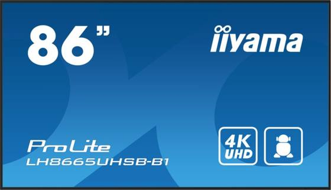
Écran 86" 4Kiiyama ProLite LH8665UHSB-B1
usage 24/7, 800 cd/m²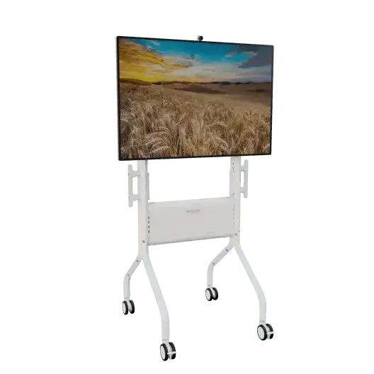
Chariot mobileChief Voyager LSCUW
+ étagère SCSSW Barre de visioLogitech Rally Bar
Barre de visioLogitech Rally Bar
caméra 4K, zoom 15X Micros déportésLogitech Rally Mic Pod
Micros déportésLogitech Rally Mic Pod
4 par salle
| Élément | Caractéristiques |
|---|
| Écran 86" 4K professionnel | iiyama ProLite LH8665UHSB-B1 : dalle IPS 86" (85,6" visibles), 3840 × 2160, 800 cd/m², fonctionnement 24/7, 2 entrées HDMI 2.0, DisplayPort, USB, RJ45, haut-parleurs 2 × 10 W, VESA 600 × 400, 49 kg ; garantie 3 ans |
| Chariot mobile | Chief Voyager LSCUW (grand modèle, réglage manuel en hauteur) : centre de l'écran de 1,29 à 1,55 m, charge 79 kg, VESA jusqu'à 600 × 400, rangement des équipements derrière panneaux amovibles, gestion des câbles, roulettes verrouillables. Étagère Chief SCSSW pour les accessoires |
| Barre de visioconférence | Logitech Rally Bar : caméra 4K motorisée (zoom 15X dont 5X optique, champ 90°), cadrage automatique, 6 micros à formation de faisceaux (portée 7 m), 2 haut-parleurs 70 mm ; certifiée Microsoft Teams et Zoom, mode USB ou salle Teams Rooms |
| Micros déportés | 4 Logitech Rally Mic Pod (réf. 989-000430) chaînés sur la table, portée 4,5 m chacun, en complément des 6 micros intégrés de la barre |
| Connectique et réseau | Cordons HDMI 4K (2 m et 10 m), raccordement table HDMI / USB pour les ordinateurs portables, switch PoE 8 ports TP-Link SG2210MP dans le chariot (barre, lecteur d'affichage, prise réseau), alimentation du chariot par une prise dédiée |
| Lecteur d'affichage | Lecteur Navori StiX 3800 sur chaque écran de salle : hors réunion, l'écran affiche les messages HSE, le planning et les alertes de la diffusion centralisée ; en réunion, l'entrée bascule sur la visioconférence |
En mode USB, chacun lance sa réunion depuis son ordinateur portable, quelle que soit la plateforme (Teams, Zoom, Webex). Un fonctionnement en salle Microsoft Teams Rooms autonome, avec écran tactile de commande, est possible en option ; il nécessite une licence Teams Rooms fournie par EXYTE.
Chaque salle est testée en appel réel avec EXYTE avant ouverture. Lors des changements de phase, les ensembles mobiles sont simplement déplacés, contrôlés et remis en service par nos équipes.
Micros déportés
La DPGF mentionne un kit de 5 micros déportés. La Rally Bar accepte au maximum 4 Rally Mic Pod (donnée constructeur Logitech) : nous retenons 4 micros déportés, qui s'ajoutent aux 6 micros intégrés de la barre et couvrent les tables de réunion des modules.
Afficheurs de chantier
Nous retenons six écrans d'extérieur professionnels Samsung OHDX 55" (réf. LH55OHDEBGBXEN), conçus pour la pleine lumière : 3 500 cd/m² (plus du double des 1 500 cd/m² demandés), capteur de luminosité automatique, IP56, fonctionnement 24/7 de -30 à +50 °C. Chaque écran est piloté par un lecteur Navori StiX 3800 alimenté en PoE et raccordé au réseau terrain.
Figure 4 — Écran d'extérieur Samsung OHDX 55" (visuel constructeur).
| Écran OHDX 55" | Caractéristiques |
|---|
| Dalle | 55" Full HD, verre 3 mm anti-reflet |
| Luminosité | 3 500 cd/m², capteur automatique |
| Protection | IP56 eau et poussière |
| Températures | -30 à +50 °C |
| Usage | 24 h sur 24, 7 jours sur 7 |
| Entrées | 2 HDMI, RJ45, RS232, USB |
Figure 5 — Totem extérieur ERARD PRO OUTDOOH (visuel constructeur).
Lecteur Navori StiX 3800 : 4K, PoE, sans ventilateur (visuel constructeur).
| Élément | Solution |
|---|
| Lecteur de diffusion | Navori StiX 3800 : 4K 60 i/s, Android 11, alimentation PoE, 2 ports RJ45, sans ventilateur, contenus stockés en local, lecture programmée, supervision de l'écran par le logiciel de gestion |
| Totems (entrées et aire de livraison) | 3 totems ERARD PRO OUTDOOH, fabrication française : acier peint époxy anti-corrosion, fermeture par 2 serrures à clé, socle autonome de 900 × 550 mm sans génie civil, écran en portrait, centre de l'écran à 1,24 m ; toiture de protection et lestage adaptés au chantier |
| Supports muraux | 3 bras muraux orientables antivol sous les auvents et coursives des modules de base vie, bas de l'écran à environ 1,80 m |
| Réseau | Liaison Cat. 6A vers le switch de zone, switch PoE local TP-Link SG2210MP, VLAN 50 « Affichage » du réseau terrain, aucune connexion internet |
| Alimentation | 230 V depuis le lot électricité (dont trois afficheurs sur le réseau ondulé selon l'AVP), coffret IP65 avec protection et parafoudre |
Diffusion centralisée
Les seize écrans (six afficheurs extérieurs et dix écrans de salle) sont pilotés depuis un serveur de diffusion unique Navori QL installé sur site, dans la baie du Hub 1, sur le réseau terrain (VLAN 50, secouru par l'onduleur). Les licences Navori sont attachées à chaque lecteur, sans abonnement cloud ni accès internet. Les lecteurs récupèrent leurs programmes sur le serveur et les gardent en mémoire : l'affichage continue même en cas de coupure du réseau.
Figure 6 — Diffusion centralisée Navori : serveur au Hub 1, publication depuis les postes EXYTE, écrans organisés par groupes, message d'alerte prioritaire.
| Fonction | Mise en œuvre |
|---|
| Publication | Les personnes désignées par EXYTE (HSE, communication) publient depuis leur navigateur, sur le réseau EXYTE, à travers le pare-feu (seul le flux de publication vers le serveur est ouvert) ; comptes nominatifs et droits par groupe |
| Groupes d'écrans | Base vie (3 écrans muraux), entrées (2 totems), livraisons (1 totem), salles de réunion (10) : un contenu commun et des contenus propres à chaque groupe |
| Programmation | Par jour et par plage horaire (accueil du matin, consignes de la journée, planning de la semaine), mise en veille automatique la nuit |
| Données automatiques | Compteur de jours sans accident, date et heure synchronisées sur le serveur de temps du réseau, météo et vent si EXYTE le souhaite |
| Alerte prioritaire | Message préparé (évacuation, vent fort, accès fermé) diffusé en un clic sur tous les écrans, puis retour automatique au programme |
| Supervision | État de chaque lecteur et de son écran (en ligne, contenu en cours, capture d'écran) consulté depuis le serveur ; écran ou lecteur hors service remonté à notre maintenance |
PROSYB livre la charte de mise en page (zone principale, compteur, horloge, bandeau défilant) et une dizaine de modèles prêts à l'emploi (consignes EPI, accueil, plan de circulation, livraisons en français et en anglais), puis forme les utilisateurs d'EXYTE pendant une demi-journée. Les contenus restent produits par EXYTE.
La sûreté
7Vidéoprotection et détection intrusion
Le dispositif répond au CCTP du lot 03 « Sécurisation du site par vidéosurveillance et détection intrusion » et à la section 6 de la DPGF : 28 caméras sur mâts couvrant le périmètre, les accès, la base vie et les zones de stockage, avec détection d'intrusion par analyse vidéo et levée de doute immédiate.
Figure 7 — Plan de couverture des caméras de l'étude AVP (FR02201-ENG-ELEC-DRW-1009), point de départ de notre étude de couverture d'exécution.
Étude de couverture
Avant toute commande, nous réalisons l'étude de couverture sûreté demandée par le CCTP, à partir du PIC d'EXYTE et du plan AVP : contrôle des champs et des distances de chaque caméra selon la méthode DORI (EN 62676-4), suppression des angles morts sur les accès, portails, zones de livraison et de stockage, et masquage des zones hors emprise. Le plan d'implantation et le schéma d'architecture sont soumis à EXYTE.
Matériel
| Équipement | Caractéristiques |
|---|
| Caméras Hikvision DS-2CD1643G2-LIZSU ×28 | Bullet 4 MP, objectif varifocal motorisé 2,8-12 mm, Smart Hybrid Light (infrarouge et lumière blanche), WDR 120 dB, détection humain / véhicule, micro intégré, IP67, PoE |
| Mâts | Mâts sur massif béton (massifs au lot génie civil), caméras hors de portée et protégées des chocs |
| Switchs PoE de zone ×8 | Installés sur rail DIN dans les coffrets électriques de zone fournis et posés par le lot électricité (SPIE) : (R.O.1, R.O.2, R.N, R.E.1, R.E.2, R.E.3, R.H.1, R.H.2), raccordés en fibre au local Hub 1, alimentation 230/48 V — modèle RG-NIS3100-8GT4SFP-HP (8 ports RJ45 PoE/PoE+ 240 W, 4 SFP), avec module d'alimentation 48 V DC RFOFIBRE-M430400-VB, boîtier optique rail DIN BOPTDIN08SCSS2E et modules SFP monomode 20 km SFPL-1GD31-20 |
| Switch PoE local poste de garde | Modèle TL-SG3210XHP-M2 : 8 ports PoE 2,5 Gbit/s + 2 SFP+, dédié aux équipements locaux (NVR, PC, périphériques), conforme à la demande de 8 ports RJ45 PoE+ du CCTP |
| Enregistreur Hikvision DS-7732NXI-K4/16P(E) | NVR AcuSense 32 voies (28 utilisées + 4 de réserve) avec 16 ports PoE intégrés, 256 Mbit/s en entrée, H.265+, 4 baies disques, 2 ports réseau, relecture synchrone 16 voies, sortie HDMI 4K, recherche AcuSearch |
| Disque de surveillance | 1 disque HW-SP-HDD-SATA-20TB (20 To, SATA 6 Gbit/s, 7.2K, hot-plug), dimensionné pour la durée de conservation retenue, évolutif par ajout de baies disque sur le NVR |
| Logiciel iVMS-4200 | Logiciel d'exploitation Hikvision, sans licence, installé au poste de garde (et sur un poste EXYTE si souhaité) |
| Poste de supervision | PC Dell Inspiron 13 (réf. INSPIRON13), configuration adaptée à la supervision du système de vidéosurveillance, au poste de garde, sur départ ondulé |
Figure 8 — Synoptique sûreté de l'étude AVP (FR02201-ENG-ELEC-DRW-1015) : switchs PoE par zone, fibre vers le local Hub 1, NVR et poste de garde.
Détection, levée de doute et alertes
- Détection d'intrusion par franchissement de ligne et entrée en zone sur les caméras périmétriques, avec filtrage humain / véhicule pour limiter les fausses alarmes.
- Plages horaires de surveillance renforcée hors horaires de chantier.
- Association automatique alarme → caméra concernée → enregistrement de la séquence.
- Notification au poste de garde et par e-mail aux personnes désignées par EXYTE ; journalisation des alarmes, acquittements et observations.
Enregistrement et conservation
L'étude AVP estime 18 à 22 To pour 15 jours d'enregistrement. Nous dimensionnons le stockage du NVR pour la durée validée par EXYTE, dans la limite légale d'un mois. L'accès aux images est réservé aux personnes habilitées, par comptes nominatifs ; tout export est tracé. Une procédure de recherche, d'extraction et de sauvegarde d'une séquence est remise à EXYTE.
RGPD et information du personnel
La finalité du dispositif est la protection du site et la prévention des intrusions, jamais la surveillance permanente de l'activité individuelle. Nous fournissons les éléments de l'analyse RGPD et de la signalétique d'information, limitons les champs de vision à l'emprise et paramétrons les droits par profil.
Analyse du port des EPI
La DPGF prévoit une analyse comportementale incluant le port des EPI. Cette fonction peut être assimilée à une surveillance des salariés : nous proposons de la paramétrer en mode statistique et préventif (alertes HSE sans identification nominative), sous réserve de validation par EXYTE et d'information préalable des représentants du personnel.
Continuité et accès distant
Caméras et NVR sont alimentés par les départs secourus du lot électricité. Le CCTP prévoyant un système autonome vis-à-vis d'internet, l'accès distant éventuel se fait par un routeur 4G/5G dédié avec VPN chiffré, uniquement s'il est validé par EXYTE et le client.
Une solution Hikvision de bout en bout
Caméras, enregistreur et logiciel d'exploitation sont d'une même marque, Hikvision. Les analyses intelligentes des caméras (franchissement de ligne, intrusion de zone, filtrage humain / véhicule) sont reconnues nativement par l'enregistreur et par le logiciel : pas de passerelle, pas de licence tierce, pas de perte de fonctions entre la caméra et l'écran de l'opérateur.
- Enregistreur DS-7732NXI-K4/16P(E) installé dans la baie du Hub 1, sur le TD ondulé, avec 16 ports PoE intégrés et disque 20 To (HW-SP-HDD-SATA-20TB) : il enregistre en continu les 28 caméras et garde 4 voies de réserve pour les évolutions de phase.
- Logiciel iVMS-4200 au poste de garde : vue en direct, relecture, centre d'événements et carte du site, sur deux écrans.
- Réseau dédié : caméras dans le VLAN 20, enregistreur et poste de garde dans le VLAN 21 (voir chapitre 3).
Figure 9 — Enregistreur Hikvision DS-7732NXI-K4 (1,5U, 32 voies, 4 disques).
Dimensionnement de l'enregistrement
| Paramètre | Valeur retenue |
|---|
| Caméras raccordées | 28 caméras 4 MP, 32 voies disponibles |
| Compression et débit moyen | H.265+, 3 à 4 Mbit/s par caméra, soit environ 110 Mbit/s pour une capacité d'entrée de 256 Mbit/s |
| Mode d'enregistrement | Continu 24h/24, flux principal ; marquage des séquences sur événement |
| Stockage | 1 disque de 20 To (HW-SP-HDD-SATA-20TB) : environ 15 jours de conservation (estimation AVP : 18 à 22 To) ; extension possible par ajout de disques dans les baies libres du NVR |
| Durée de conservation | Paramétrée selon la durée validée par EXYTE, effacement automatique au-delà, dans la limite légale d'un mois |
Le logiciel d'exploitation iVMS-4200
iVMS-4200 est le logiciel de gestion vidéo de Hikvision. Il est fourni sans licence, fonctionne entièrement en local (sans connexion internet, comme l'exige le CCTP) et gère dans une même interface la vue en direct, la relecture, les alarmes et la carte du site. Les écrans ci-dessous illustrent l'exploitation telle que nous la paramétrerons pour le chantier KHAZNA ORY01.
Figure 10 — Vue en direct : mosaïque de 16 caméras du périmètre de nuit, arborescence par enregistreur, alarme d'intrusion signalée en rouge sur la caméra concernée (écran type, paramétrage illustratif).
- Mosaïques préparées par usage (périmètre de nuit, accès et livraisons, base vie), jusqu'à 64 caméras par écran ; le deuxième écran affiche automatiquement la caméra en alarme.
- Reprise automatique de la dernière configuration d'affichage après un redémarrage du poste.
Figure 11 — Relecture : lecture synchronisée de 4 caméras, frise de 24 heures avec les événements détectés et filtre AcuSearch humain / véhicule (écran type, paramétrage illustratif).
- Relecture synchronisée jusqu'à 16 caméras pour suivre un déplacement le long de la clôture.
- Recherche AcuSearch : seules les séquences contenant une personne ou un véhicule sont proposées, ce qui ramène la recherche d'un incident de plusieurs heures de vidéo à quelques minutes.
- Export tracé d'une séquence vers une clé USB ou un dossier réseau, avec le lecteur Hikvision fourni pour la remise aux autorités.
Figure 12 — Centre d'événements : liste des alarmes par priorité, détail de l'alarme avec la vidéo associée, saisie de l'observation et acquittement (écran type, paramétrage illustratif).
- Alarme et levée de doute : sur une intrusion, iVMS déclenche une alarme sonore, ouvre la vidéo en direct et la séquence enregistrée de la caméra et de deux caméras voisines associées.
- Traçabilité : chaque alarme est acquittée avec une observation (agent envoyé, livraison prévue, fausse alarme) ; l'historique s'exporte en Excel ou CSV pour le suivi sûreté d'EXYTE.
- Notifications par e-mail avec image aux personnes désignées par EXYTE, via le serveur de messagerie d'EXYTE.
Figure 13 — Carte électronique : positions des caméras sur le plan de chantier, caméra en alarme mise en évidence et accès direct à sa vidéo (écran type sur le plan d'implantation AVP).
- Carte du site mise à jour à chaque phase : l'agent localise immédiatement l'alarme sur le plan et oriente l'intervention.
- État des équipements : perte vidéo, caméra déconnectée, disque plein ou en défaut remontent comme des alarmes techniques, exploitées par notre maintenance.
Droits d'accès
| Profil | Droits dans iVMS-4200 |
|---|
| Agent de sécurité | Vue en direct, acquittement des alarmes, relecture des dernières 24 heures, sans export |
| Responsable sûreté EXYTE | Toutes caméras, relecture complète, export des séquences, consultation de l'historique |
| Maintenance PROSYB | Configuration des équipements, état des disques et des caméras, sans accès aux exports |
POURQUOI CE CHOIX
Une seule marque de la caméra au logiciel, c'est moins d'interfaces, aucune licence à renouveler pendant les 29 mois du chantier, un fonctionnement autonome sans internet et des agents formés en une demi-journée sur un outil largement répandu. iVMS-4200 peut aussi être installé sur un poste d'EXYTE pour une consultation à distance depuis son réseau, à travers le pare-feu.
Les écrans présentés sont des écrans types reconstitués pour illustrer le paramétrage prévu ; les noms de caméras, mosaïques et règles d'alarme définitifs seront arrêtés avec EXYTE pendant les études d'exécution.
Conformité au CCTP — annexe A
| Point de contrôle | Réponse | Commentaire |
|---|
| Plan d'implantation fourni | Oui | Étude de couverture d'exécution sur la base du plan AVP |
| Couverture accès principaux et zones sensibles | Oui | 28 caméras, maillage chantier et périphérie |
| Détection intrusion automatique | Oui | Analyse vidéo AcuSense : franchissement de ligne, intrusion de zone |
| Levée de doute vidéo possible | Oui | Alarme associée à la caméra, visualisation et relecture immédiates |
| Fonctionnement jour / nuit | Oui | Smart Hybrid Light, infrarouge et lumière blanche |
| Conservation des images décrite | Oui | Durée validée par EXYTE, un mois maximum |
| Gestion des droits utilisateurs | Oui | Comptes nominatifs, profils, traçabilité des connexions et exports |
| Procédure RGPD et affichage proposés | Oui | Éléments d'analyse et signalétique fournis |
| Maintenance et délais d'intervention précisés | Oui | Voir chapitre 11 |
| BPU et options complets | Oui | Déplacement ou ajout de caméra au prix unitaire ; caméra PTZ et barrière infrarouge en option |
L'énergie
8GTB / GTE
La GTB surveille en permanence l'alimentation électrique du chantier : un automate WAGO Compact Controller 100 (751-9301) dans chacun des trois TGBT remonte les états, les défauts et les consommations vers un poste de supervision au poste de garde, avec historisation et alertes.
Figure 14 — Synoptique GTC de l'étude AVP (FR02201-ENG-ELEC-DRW-1017) : un automate WAGO par TGBT, compteurs Modbus, liaisons groupe électrogène et onduleur.
Points supervisés par TGBT
| Information | Type | Source |
|---|
| Position de l'inverseur de sources (2), défaut transformateur, défaut parafoudre | TOR | TGBT |
| Présence tension normale, secourue et ondulée | TOR | TGBT |
| Défauts des départs (contacts SD) : 15 au Hub 1, 14 au Hub 2, 8 au Hub 3 | TOR | Disjoncteurs |
| Énergies, puissances, tensions, courants | Modbus RS485 | Compteur d'énergie |
| État et alarmes du groupe électrogène et de l'onduleur | Liaison de communication | GE, onduleur |
Supervision
- Poste fixe à deux écrans au poste de garde, accès web aux automates.
- Tableaux de bord de consommation par Hub et par phase, historisation.
- Alertes SMS et e-mail sur défaut, perte de tension, passage sur groupe ou sur onduleur.
- Raccordement des automates au réseau terrain (VLAN GTB).
Le câblage interne des contacts et des compteurs dans les TGBT est réalisé en coordination avec le tableautier du lot électricité ; nous fournissons dès les études la liste des points et les schémas de raccordement des automates.
La conduite du lot
9Organisation, études et phasage
L'équipe dédiée
| Fonction | Rôle |
|---|
| Responsable d'affaire — Woody SEALE, Président | Interlocuteur contractuel d'EXYTE, engagement de PROSYB, arbitrages |
| Directeur de travaux — Jean-Michel BARBIER | Pilotage de la production, des équipes, de la qualité et de la sécurité |
| Chef de projet CFA — désigné à la commande | Études d'exécution, coordination avec le lot électricité et l'IT d'EXYTE, planning par phase |
| Technicien réseaux et sûreté | Paramétrage des switchs, de la vidéo et de la GTB, recettes, maintenance |
| Technicien audiovisuel | Installation et mise en service des salles de visioconférence et des afficheurs |
| Équipe câblage | Tirage, raccordement et certification fibre et cuivre |
Études d'exécution
Remises au visa d'EXYTE dans les 15 jours suivant la commande, conformément au planning AVP : architecture IT et audiovisuel, synoptiques IT, sûreté et GTC, plans d'implantation courants faibles, étude de couverture vidéo, liste des points GTB, plan d'adressage IP, fiches techniques, plan d'assurance qualité.
Phasage
T002/11/2026Commande, études d'exécution (15 jours), approvisionnements.
T114/12/2026Phase 2 : cœur de réseau, îlots 1-2, GTB, 3 salles.
T202/02/2027Phase 3 : îlots 3-10, vidéo, afficheurs, 7 salles.
T318/06/2027Phase 4 : Hub 3, base vie 20 îlots, 60 bornes.
FinDéc. 2028Repli complet et évacuation.
Interfaces
| Avec | Objet |
|---|
| Lot électricité | Alimentations des répartiteurs, mâts, caméras et afficheurs ; fourreaux CFA ; câblage interne des TGBT pour la GTB |
| Lot génie civil | Massifs des mâts caméras, chambres de tirage, traversées |
| IT EXYTE | Arrivées opérateurs, politique réseau, SSID, matériel Wi-Fi, postes de travail, licences |
| Lot SSI | Report des alarmes SSI au poste de garde |
Sécurité
PPSPS avant démarrage, accueil sécurité EXYTE pour chaque intervenant, habilitations électriques, travail en hauteur sur nacelle pour les mâts, permis de travail selon les règles du site, balisage, chantier propre chaque jour.
La validation
10Essais et réception
Chaque phase est réceptionnée avant son ouverture aux utilisateurs, sur la base d'un cahier de recette validé par EXYTE.
| Domaine | Essais | Livrable |
|---|
| Fibre | OTDR dans les deux sens et photométrie, brin par brin | Rapports de mesure |
| Cuivre | Certification classe EA de chaque lien | Rapport lien par lien |
| Réseau | Basculement des anneaux, PoE, VLAN, supervision des switchs | PV de mise en service |
| Wi-Fi | Association et relevé de couverture par îlot | Relevé de couverture |
| Vidéo | Tests caméra par caméra, de jour et de nuit, simulation d'intrusion, test des alertes, enregistrement et extraction | PV de tests, fiche de paramétrage |
| GTB | Essai point à point de chaque information jusqu'au poste de supervision, test des alertes SMS et e-mail | Liste de points cochée |
| Audiovisuel | Appel de visioconférence réel dans chaque salle, test des afficheurs | PV par salle |
Dossier des ouvrages exécutés
Plans de récolement, synoptiques, plan d'adressage IP, rapports de recette, configurations sauvegardées, fiches techniques, notices, comptes utilisateurs remis, garanties. Le DOE est mis à jour à chaque phase et à chaque modification.
La durée
11Exploitation et maintenance
Sur un chantier de 29 mois, la maintenance n'est pas une option : c'est elle qui garantit que la base vie reste connectée et le site protégé jusqu'au dernier jour. Notre organisation couvre les 28 mois d'exploitation prévus à la DPGF pour l'ensemble des courants faibles.
24/7
astreinte téléphonique et intervention pour les défauts critiques
4 h
délai d'intervention sur site, défaut critique
1
visite préventive par mois
≥ 99 %
objectif de disponibilité des services
Organisation
- Un technicien référent PROSYB, qui connaît l'installation et les interlocuteurs EXYTE, présent sur site lors des visites et des changements de phase.
- Une astreinte 24/7 joignable par un numéro unique, intégrée à la permanence technique d'exploitation du chantier.
- Un stock de pièces sur site : caméra, switch PoE, borne Wi-Fi, alimentation, jarretières, disque NVR, module automate.
- Une supervision à distance : alertes du NVR (perte vidéo, disque), des switchs (port, anneau) et de la GTB, traitées avant qu'un utilisateur ne s'en aperçoive.
- Une adresse support dédiée, support@prosyb.com, avec suivi de chaque demande par ticket dans notre outil de gestion.
- Un rapport mensuel : interventions, disponibilité, incidents, actions correctives, évolutions à prévoir.
SUPPORT ET SUIVI DES DEMANDES
Toute demande d'EXYTE (incident, dysfonctionnement, demande d'évolution ou de déplacement) s'adresse à support@prosyb.com. Chaque message crée automatiquement un ticket dans notre outil de gestion dédié : accusé de réception avec numéro de ticket, qualification du niveau de gravité, affectation à un technicien, suivi de l'avancement et clôture après validation par le demandeur. L'historique des tickets constitue le registre des interventions du chantier et alimente le rapport mensuel (délais, disponibilité, incidents récurrents). Pour un défaut critique, l'appel à l'astreinte 24/7 reste prioritaire et le ticket est ouvert en parallèle.
Niveaux de gravité et délais
| Niveau | Exemples | Intervention | Remise en service |
|---|
| Critique | Perte d'un cœur de réseau, NVR à l'arrêt, perte de la GTB, coupure d'un anneau fibre | 4 h, 24/7 | 8 h (solution provisoire incluse) |
| Majeur | Caméra hors service, zone Wi-Fi coupée, salle de visioconférence indisponible | J+1 ouvré | J+2 ouvrés |
| Mineur | Prise défectueuse, afficheur, réglage | 72 h ouvrées | Visite suivante au plus tard |
Maintenance préventive
| Système | Opérations | Fréquence |
|---|
| Réseau et VDI | Contrôle des répartiteurs et coffrets (étanchéité, température, propreté), états des anneaux, mises à jour, sauvegarde des configurations | Mensuelle |
| Wi-Fi | Contrôle de fonctionnement des bornes, contrôle de couverture après réorganisation | Trimestrielle |
| Vidéoprotection | Nettoyage des optiques, contrôle des cadrages, de la vision de nuit, des détections et de l'enregistrement, état des disques, fixations des mâts | Mensuelle |
| GTB / GTE | Test des alertes, contrôle des remontées et des compteurs, sauvegarde des programmes | Trimestrielle |
| Audiovisuel et affichage | Test de chaque salle, mises à jour, contrôle des afficheurs | Trimestrielle |
Évolutions de phase, déplacements et repli
Chaque changement de phase est préparé comme une opération à part entière : relevé des besoins avec EXYTE, plan de basculement, réalisation hors des heures d'occupation des îlots lorsque nécessaire, essais, mise à jour du DOE. Les déplacements ou ajouts de caméras, prises et bornes demandés en cours de chantier sont réalisés sur devis selon le bordereau de prix unitaires. En fin de chantier (décembre 2028), nous assurons la dépose, le conditionnement du matériel réutilisable et l'évacuation des déchets selon les filières DEEE.
NOTRE ENGAGEMENT
Un interlocuteur unique, joignable jour et nuit, qui connaît l'installation : la base vie reste connectée et le site protégé pendant toute la durée du chantier.
Le cadre
12Hypothèses, interfaces et questions
Hors de notre prestation
- Courants forts (HTA, TGBT, distribution, éclairage, IRVE) et système de sécurité incendie.
- Massifs, tranchées, fourreaux et chambres de tirage (lots génie civil et électricité).
- Alimentations électriques des équipements courants faibles, jusqu'à leur coffret (lot électricité).
- Fourniture des switchs du réseau informatique (bureautique) : EXYTE. Leur installation, leur raccordement et leur paramétrage sont compris dans notre offre.
- Enveloppes des coffrets extérieurs de zone : fournies et posées par le lot électricité (SPIE). Notre offre comprend les câbles (fibre et liaisons caméras) et le matériel courants faibles installé à l'intérieur.
- Arrivées opérateurs, abonnements, postes de travail, licences de visioconférence et contenus des afficheurs (EXYTE).
- Gardiennage, astreinte de levée de doute externalisée et intervention physique sur intrusion.
Points à confirmer avec EXYTE
| N° | Question |
|---|
| 1 | Bornes Wi-Fi : la DPGF prévoit leur fourniture en phase 3 (20) et leur seule pose en phases 2 (4) et 4 (60). Les bornes des phases 2 et 4 sont-elles fournies par EXYTE ? Quel modèle et quel contrôleur faut-il retenir pour la phase 3 ? |
| 2 | Prises RJ45 : confirmer la catégorie 6A blindée (DPGF) plutôt que la catégorie 6 de la fiche technique OTH-1033. |
| 3 | Vidéo : durée de conservation à retenir (15 jours selon l'AVP, un mois au maximum) et validation de l'analyse du port des EPI au regard du RGPD. |
| 4 | Vidéo : accès distant souhaité ou système strictement local (le CCTP prévoit un système autonome vis-à-vis d'internet). |
| 5 | Salles de réunion : plateforme de visioconférence d'EXYTE, mode USB ou salle Teams Rooms (licence), et validation de 4 micros déportés au lieu de 5. |
| 6 | GTB : logiciel de supervision attendu (supervision web des automates ou logiciel tiers) et destinataires des alertes. |
| 7 | Maintenance : répartition de la permanence 24/7 entre le lot électricité et le lot courants faibles. |
| 8 | Réseau : plan d'adressage et numérotation des VLAN d'EXYTE, modèles du pare-feu et des switchs du standard KHAZNA fournis par EXYTE (dates de livraison sur site pour chaque phase), authentification des prises des îlots (802.1X ou MAC), validation de l'accès VPN de maintenance. |
| 9 | Afficheurs : validation des six emplacements sous abri (auvents de modules ou totems couverts) et du poste EXYTE qui assurera la diffusion des contenus. |
Nos engagements
13Pourquoi PROSYB
1
interlocuteur pour tous les courants faibles
100 %
des liens fibre et cuivre certifiés
24/7
astreinte pendant toute la durée du chantier
29 mois
d'accompagnement, de l'installation au repli
Les data centers, notre terrain
PROSYB intervient en courants faibles, sûreté et GTB sur des data centers en construction et en exploitation : exigences, rythmes et règles de ces chantiers sont les nôtres.
Toute la chaîne maîtrisée
Du câble à l'écran : câblage, réseau, vidéo, GTB et audiovisuel sont réalisés et maintenus par nos équipes, sans frontière à arbitrer.
Proximité
Basés à Roissy-en-Brie (77), à moins d'une heure de Fouju : nos équipes et notre astreinte interviennent rapidement.
Garantie
1 an pièces et main-d'œuvre à compter de la réception, 2 ans sur les pièces, en complément de la maintenance pendant le chantier.
EN RÉSUMÉ
Une base vie connectée dès le premier îlot, un chantier protégé jour et nuit, une énergie surveillée en continu, et une équipe qui reste à vos côtés jusqu'au repli : PROSYB porte le lot courants faibles de KHAZNA ORY01 de bout en bout.
Pour PROSYB
Woody SEALE, Président
woody.seale@prosyb.com · 07 71 69 47 99

Bon pour accord — EXYTE
Nom, fonction, date, signature et cachet
Annexe
ASynoptiques et plans d'implantation de principe
Les synoptiques et plans ci-après présentent, lot par lot, l'ensemble des installations courants faibles de notre offre : équipements, liaisons avec leurs repères, et phasage (P2, P3, P4). Les plans d'implantation sont des plans de principe redessinés, non à l'échelle : ils seront recalés sur le plan d'implantation EXYTE 1007 et soumis au visa lors des études d'exécution, dans les 15 jours suivant la commande. Les positions marquées « à confirmer » seront arrêtées avec EXYTE et le coordinateur SSI.
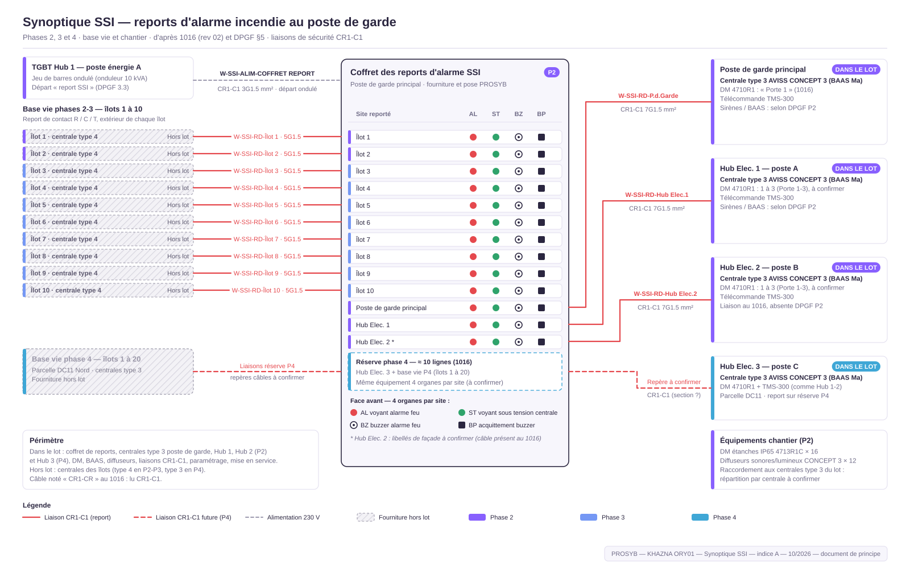
Planche A.1 — Synoptique SSI — reports d'alarme incendie au poste de garde (phases 2, 3 et réserve phase 4).
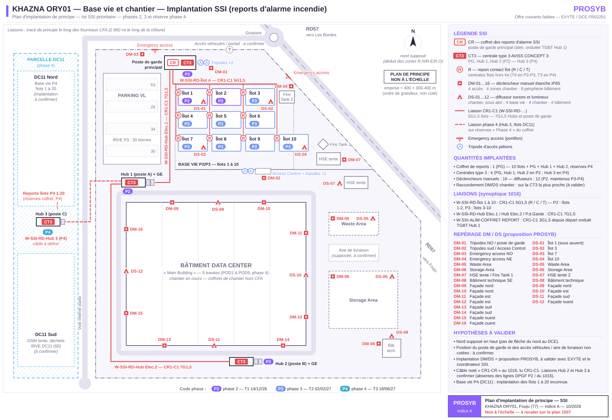
Planche A.2 — Plan d'implantation de principe SSI — coffret de reports, centrales type 3, déclencheurs manuels DM-01 à DM-16, diffuseurs DS-01 à DS-12, liaisons CR1-C1.
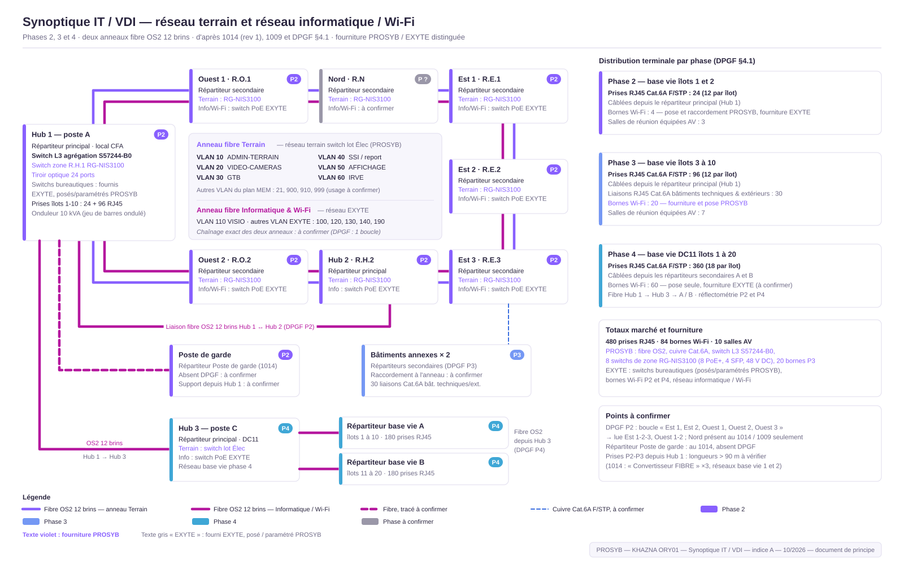
Planche A.3 — Synoptique IT / VDI / Wi-Fi — anneaux fibre OS2, répartiteurs, prises et bornes par phase.
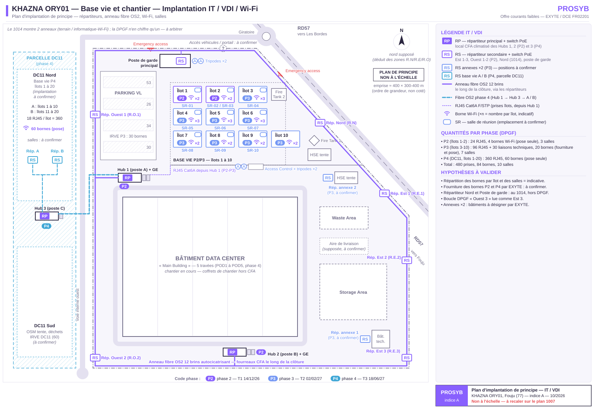
Planche A.4 — Plan d'implantation de principe IT / VDI / Wi-Fi.
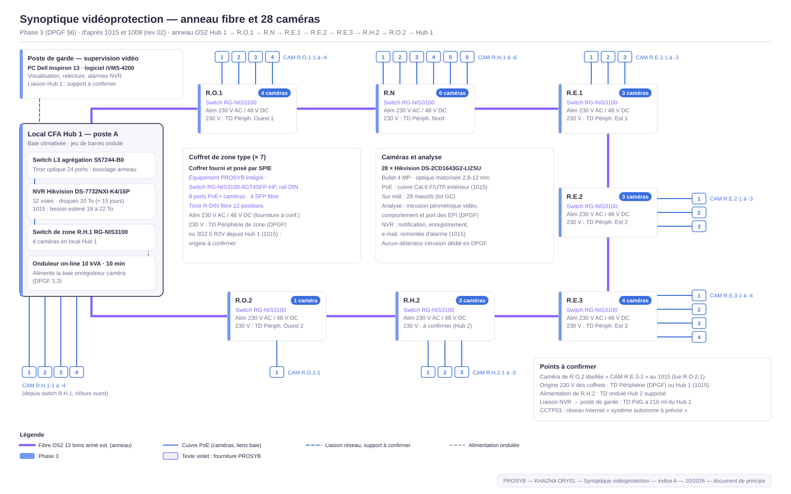
Planche A.5 — Synoptique vidéoprotection — anneau fibre des 8 zones, 28 caméras, NVR et supervision.
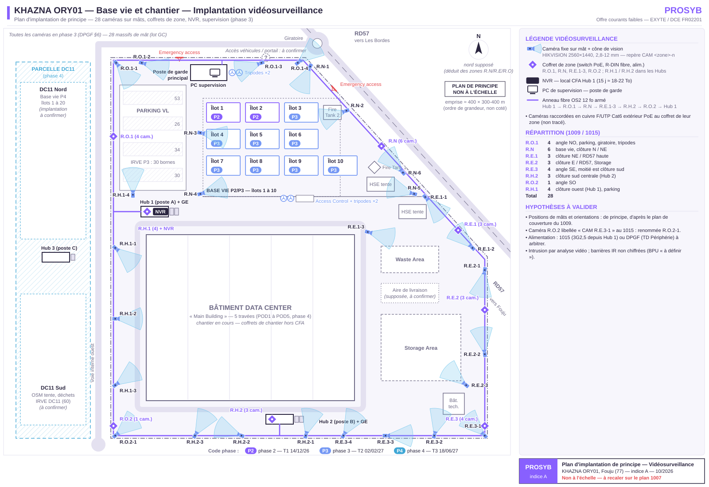
Planche A.6 — Plan d'implantation de principe vidéoprotection — 28 caméras et champs de vision.
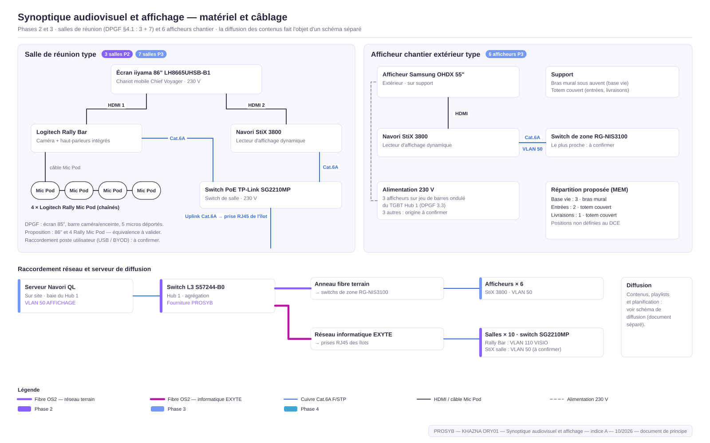
Planche A.7 — Synoptique audiovisuel et affichage — salle type, afficheur type, raccordements.
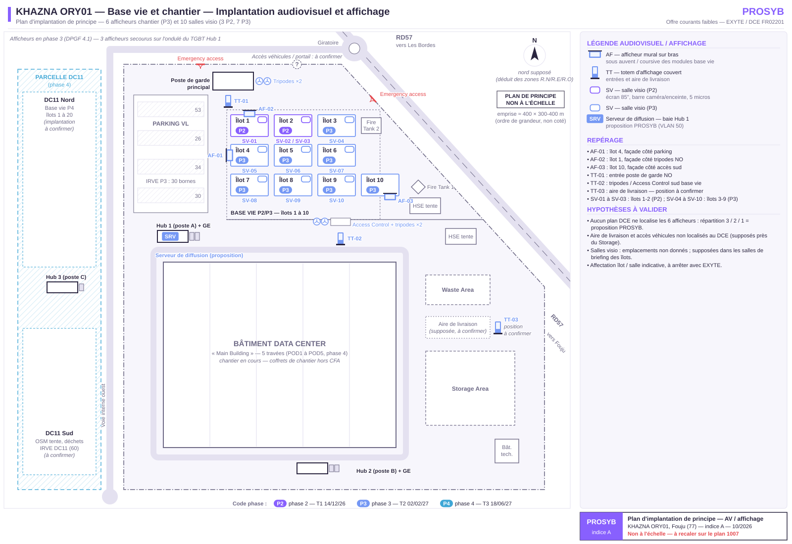
Planche A.8 — Plan d'implantation de principe audiovisuel — salles SV-01 à SV-10, afficheurs AF-01 à AF-03, totems TT-01 à TT-03.
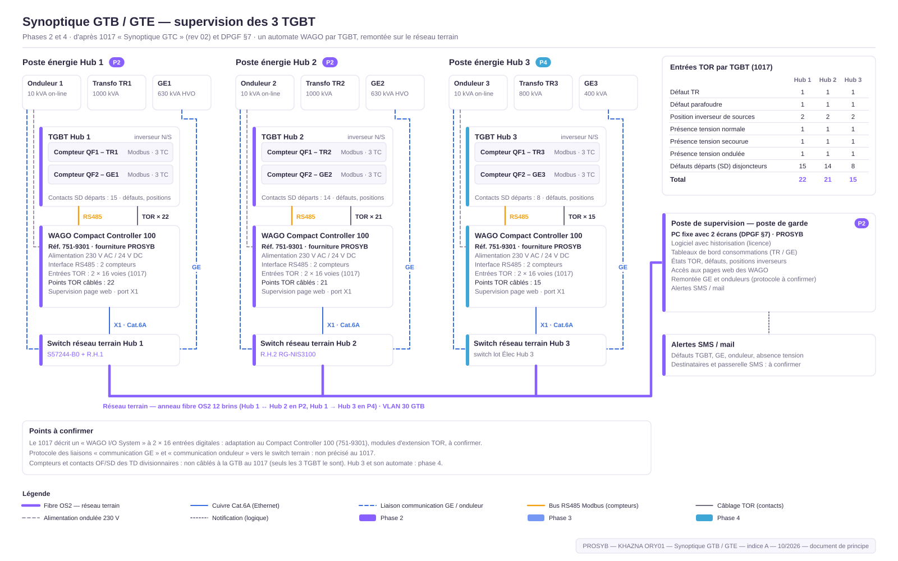
Planche A.9 — Synoptique GTB / GTE — automates WAGO, comptage, alarmes techniques, supervision.
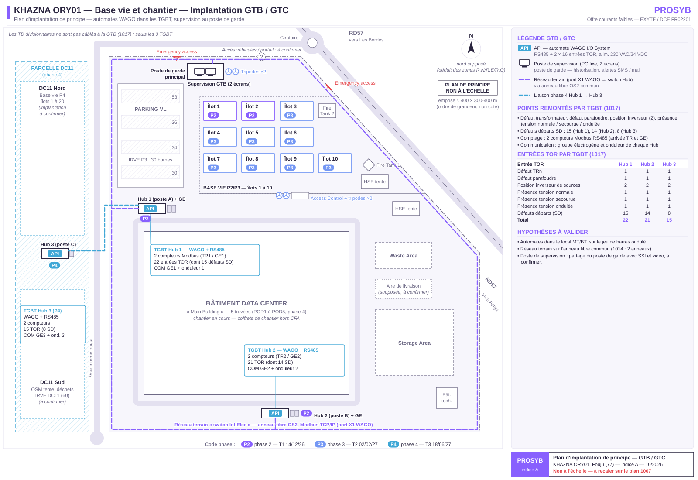
Planche A.10 — Plan d'implantation de principe GTB / GTE.
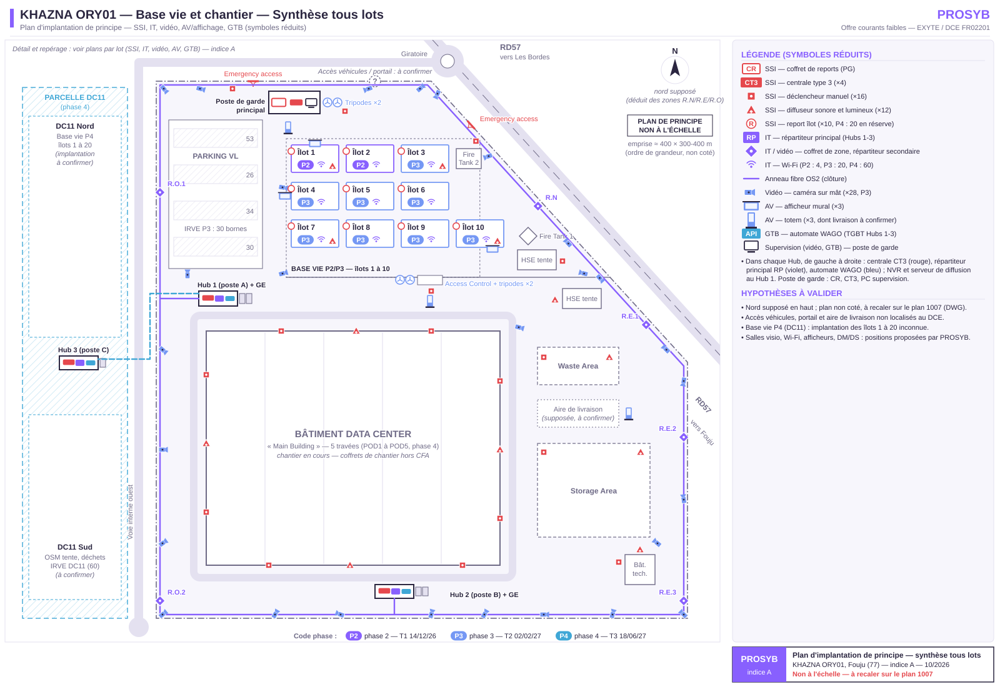
Planche A.11 — Plan de synthèse — tous lots courants faibles.